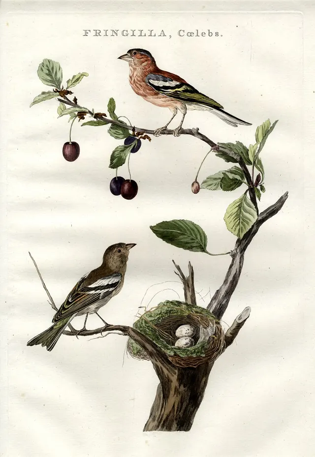

Nieuws ·
Nieuwe Mini-Tentoonstelling 'Vogelvreugd' door Radboud Erfgoed, Nu in Valkhof Museum

Ontdek de wonderlijke wereld van vogels in Nijmegen met de nieuwste mini-tentoonstelling ‘Vogelvreugd’, gepresenteerd door Radboud Erfgoed. Vanaf 9 januari kunt u deze unieke presentatie bewonderen in het Valkhof Museum, gelegen aan het Keizer Karelplein in het tijdelijke onderkomen van het museum.
Deze fascinerende tentoonstelling, geplaatst in de kenmerkende Radboud Erfgoed ladekast, belicht de diversiteit van vogelsoorten in Nijmegen. U krijgt een inkijk in het leven van zowel verdwijnende als nieuwkomende vogelsoorten, en de aanpassingen die sommige vogels hebben gemaakt om te overleven in de dynamische stadsomgeving.
Vogelvreugd bij het Valkhof museum
Het Valkhof Museum, momenteel in verbouwing, heeft recent de openingstijden verruimd naar zes dagen per week. Deze uitbreiding, mogelijk gemaakt door extra afspraken rondom beveiliging en faciliteiten, stelt het museum in staat een breder publiek hartelijk te verwelkomen.
‘Vogelvreugd’ biedt meer dan alleen een blik op de vogels van Nijmegen. Het is een viering van vogels in de wetenschap en kunsten, van hun symbolische betekenis in vrijheid tot hun afbeelding in de geschiedenis. Bijzondere stukken, waaronder opgezette vogels uit de biologiecollectie en oude prenten uit de ‘Nederlandsche Vogelen’, worden getoond.
Bezoekers worden uitgenodigd om de ladekast van Radboud Erfgoed te verkennen en meer te leren over het vogelonderzoek in de regio. Ontdek alles over de lokale huismus, scholekster, en halsbandparkiet. Deze tentoonstelling is een ideale voorbereiding op de vogeltelling eind januari.
Deze presentatie is een resultaat van de samenwerking tussen Radboud Universiteit en Valkhof Museum, die samen de interactie tussen kunsten en wetenschap bevorderen. Dit partnerschap biedt een waardevolle bijdrage aan de maatschappij.
Radboud Erfgoed heeft voor deze tentoonstelling de krachten gebundeld met Sovon en Healthy Landscape (Radboud Universiteit). Bezoek ‘Vogelvreugd’ tot en met 12 mei 2024 op de tijdelijke locatie van het Valkhof Museum, Keizer Karelplein 33.”